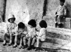

 |
|
L'alba è
sorta finalmente anche a Sesto Ulteriano. Questo paese dai 1600 abitanti
ora può dire di avere un asilo moderno ed efficiente, da far invidia
al Capoluogo.
Si tratta di un ampio e piacevole ambiente costruito su terreno parrocchiale
grazie ad una generosa elargizione della Contessa Giulia Maria Paravicini
Crespi. Questo dono fatto agli abitanti di Sesto ed in particolare ai
bambini, fa sì che questi ora abbiano un Asilo come tanti altri
bambi più fortunati di loro.
Il problema dell'infanzia non poteva essere risolto più brillantemente.
Sessanta sono i bambini che sotto le vigili , attente cure delle RR. Suore,
frequentano l'Asilo, mentre un'altra sessantina sono i ragazzi delle elementari
che al pomeriggio vanno al doposcuola. La refezione completa un servizio
indispensabile per quelli che hanno i genitori giornalmente lontani per
impegni di lavoro. Durante l'anno sono pure tenuti corsi serali di taglio
e cucito per le ragazze.
L'Asilo, composto di 1 sala da gioco, 1 spogliatoio, 2 aule per lezione,
1 refettorio, 1 cucina ed una piccola cappella, è curato e pulito
da 5 Suore che si prodigano nell'assistenza continua della gioventù.
A chi ha provveduto a dar vita ed a far fiorire quest'opera che abbraccia,
si può dire, l'alba della vita di tanti giovani, giunga l'espressione
della nostra ammirazione.
L'Amministrazione Comunale, in altre faccende affacendata, per il passato,
non ha trovato nei suoi bilanci contributi dignitosi per queste opere
che tesimoniano una sana e saggia scelta politica scolastica. Attualmente
il Comune, per i bambini che frequentano questo Asilo, spende 350.000
lire all'anno.
E' augurabile che per l'avvenire riservi meno parole e più fattivi
aiuti a questa istituzione veramente sorta per il popolo e per aiutare
tutte le famiglie.
Noi che abbiamo ammirato questo ampio e luminoso edificio, siamo pure
stati colpiti dal gusto, semplice e funzionale, com'è stato arredato.
Si entra in una grande sala da gioco o da ricreazione e si passa nello
spogliatoio, dove ogni bimbo ha un proprio armadietto; appese alle pareti
attorno si vedono tutte le salviette e su una mensola il sapone. Il refettorio
appena che i bimbi hanno mangiato si trasforma in un piccolo dormitorio,
dove al posto dei tavolini compaiono altrettante brandine. In complesso,
appena attorno ci saranno delle piante, delle aiuole con fiori e la strada
che passa davanti sarà asfaltata, l'edificio sembrerà ancor
più completo e funzionante, almeno per chi lo osservi esternamente.
Le famiglie e la popolazione di Sesto, che sanno giustamente valutare
questa realtà, esprimono a mezzo nostro un ringraziamento sincero
alla Contessa Giulia Maria Paravicini Crespi che ha donato questo Asilo.
L'opera è una dimostrazione di particolare attenzione per i problemi
di Sesto, ma il paese ha ancora mille necessità e speriamo che
dove non arrivano gli Amministratori, giunga qualche cittadino generoso.
Il 20 giugno nell'aula principale verrà scoperta una lapide in
memoria di Don Luigi Mauri.
(da "Sguardo Panoramico", giornale d'informazione sangiulianese,
n.9, anno II, giugno 1965)
|
|
|